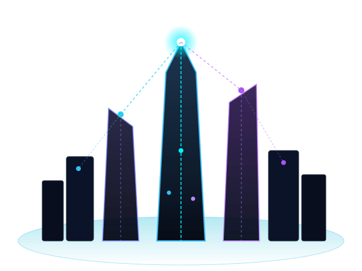

The Cities of Tomorrow
Are Being Built Today
Discover how Artificial Intelligence, Internet of Things, autonomous systems, and smart infrastructure are transforming cities into intelligent ecosystems.

Future City Real-Time Metrics
Simulated live sensor telemetry aggregated across 1.4 billion IoT municipal nodes.
Energy Efficiency
Smart Solar & Microgrids Optimal
Traffic Reduction
Autonomous Flow Sync Zero Congestion
Connected Devices
1.4B Municipal Endpoints Synchronized
Carbon Reduction
Air Quality Index 99.4 AQI Pure
Technologies Powering Smart Cities
The core technological breakthroughs transforming raw urban spaces into self-aware, responsive environments.
AI Intelligence
Artificial Intelligence continuously analyzes petabytes of real-time municipal data to predict traffic surges, optimize municipal budgets, and make automated, life-saving decisions.
Internet of Things
Billions of connected micro-sensors and edge devices monitor air purity, structural integrity, water pipelines, and pedestrian flow in real time with ultra-low latency 6G mesh protocols.
Smart Transportation
Autonomous electric vehicles, AI-synchronized traffic lights, and self-scheduling magnetic public transport work harmoniously to virtually eliminate accidents and commute congestion.
Smart Energy
100% renewable power generated through transparent solar facades, kinetic pavements, and distributed hydrogen storage grids that intelligently balance energy loads in real time.
A Day in the Smart City
Experience how continuous AI orchestration and IoT connectivity optimize urban life every minute of the day.
Smart Home Energy
Smart homes optimize energy usage, charging vehicles and adjusting climate.
AI Manages Traffic
AI signals synchronize with rush hour traffic, keeping transit smooth and stop-free.
Building Climate
Smart buildings adjust temperature & tint glass to minimize power draw.
Autonomous Transit
Autonomous public pods scale dynamically to eliminate peak congestion.
AI City Security
AI-powered surveillance & drone nodes monitor the city, dimming empty streetlights.
Smart homes optimize energy usage
Automated climate control and solar home batteries prepare for the morning routine with zero wasted power.
AI manages traffic
Intelligent traffic signals coordinate with autonomous vehicles in real-time, eliminating commute gridlock.
Smart buildings adjust temperature
Commercial spires dynamically tint smart windows and balance HVAC loads during maximum solar exposure.
Autonomous public transport reduces congestion
Fleet sizes automatically scale along heavy demand corridors to offer frictionless transit.
AI-powered security monitors the city
Predictive civic defense systems, smart lighting, and ambient sensors keep the nocturnal city safe and quiet.
Smart City Key Features
Eight integrated modular pillars that empower sustainable, resilient, and human-centric living.
Green Energy
Decentralized solar glass, wind micro-turbines, and kinetic walkways feeding hydrogen battery reserves.
Intelligent Traffic
AI-synchronized adaptive signals, lane prioritization, and emergency vehicle auto-clearance.
Smart Homes
Ambient intelligence, biometric personalization, predictive climate control, and localized solar storage.
Smart Healthcare
Emergency medical drones, wearable telemetry monitoring, and AI predictive epidemic response.
Smart Water
Acoustic leak detection, greywater automated recycling, and real-time mineral purification monitoring.
AI Security
Privacy-preserving biometric encryption, automated fire defense drones, and rapid crisis response.
Smart Environment
Vertical forest irrigation, automated urban cooling mist, and hyper-local atmospheric AQI sensors.
Autonomous Transit
Hyper-synchronized EV pods, magnetic levitation express trains, and zero-collision routing.
How a Smart City Works
From physical telemetry collection to real-time civic impact in a matter of milliseconds.
Sensors
Data gathered from IoT, cameras, LiDAR & environmental nodes.
IoT Network
High-speed, low-latency 6G mesh transmits telemetry securely.
Cloud
Decentralized municipal cloud pools and aggregates streaming data.
AI Analytics
Neural networks spot patterns and forecast municipal demands.
Smart Decisions
Instant automated actuation across grids, transit, and services.
Citizens
Residents enjoy cleaner air, faster transit, and safer communities.
Imagine a City That Thinks.
The city of 2035 is not merely steel, concrete, and glass. It is a living, breathing synthetic organism designed to serve, protect, and empower human potential.
More Sustainable
Zero waste, 100% circular resources & clean energy.
Safer
Predictive disaster prevention & instant medical response.
Faster
Zero wait-time transit & effortless civic digital services.
Energy Efficient
Self-generating buildings & predictive power grids.
Citizen Focused
Human happiness, clean air & vibrant green public spaces.
Are You Ready for the
Smart City Revolution?
Technology is not just changing our cities. It is redefining how we live. Step forward into the intelligent era.
Connected to SmartCity 2035 Network Dispatch!